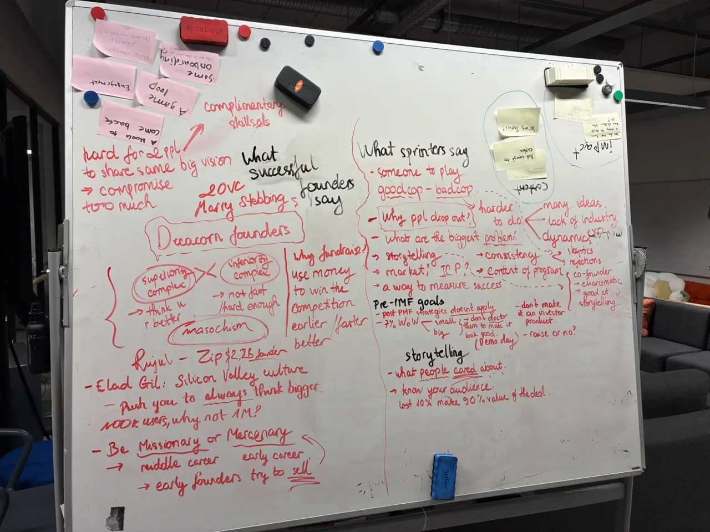
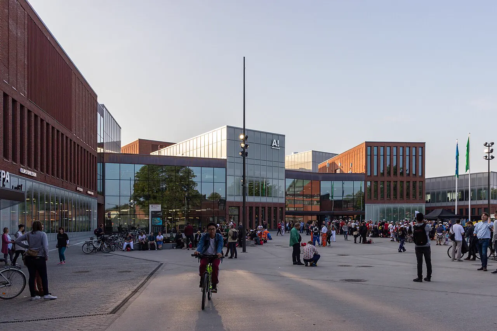
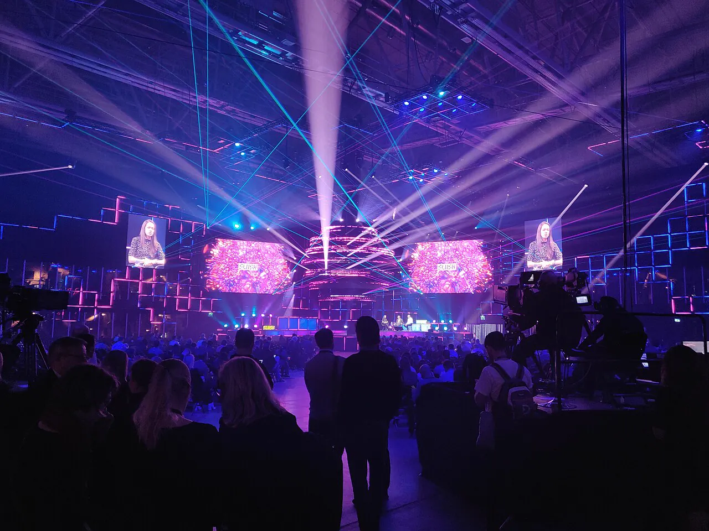
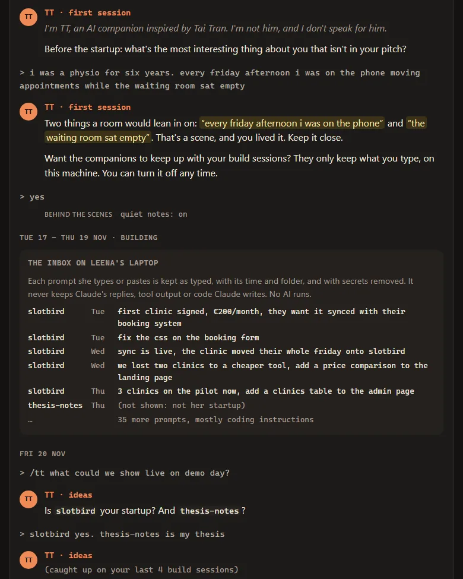

Ambassador at Aalto Founder School since November 2026
Vic Lê, applying to run Founder Sprint
I sit with Founder Sprint sprinters, write down what stops them, and build small tools for it. This page is what they told me.

What sprinters told me
The six problems I heard most from this autumn's Founder Sprint cohort, in their words.
- Too many ideasWeeks go into choosing, so no idea meets a customer.Drop-out
- No industry experienceHard to pick a problem you know from the inside.Drop-out
- Team dynamicsTwo people rarely share one big vision, so they compromise too much.Drop-out
- StorytellingSceptics and rejections land harder without a story told the same way twice.Problem
- Measuring progressGrowth targets made for after product-market fit don't fit week three.Problem
- Raise or notThe fear of building for investors instead of customers.Problem

Why I build for sprinters
Slush 2025 made Lovable and Legora feel within reach. In 2026 I co-founded Engrammic in the Antler residency. The money ran out before traction came.
That taught me where founders grow: before the hockey stick, in the run of tries, losses and restarts. Founder Sprint can make that run shorter.
So my tools ask questions and never decide. Customers decide, and a sprinter learns more from people than from a machine.

Tools I built for sprinters
Both run in Claude Code on the sprinter's own laptop and keep their notes there.
- Sprint companionsFour AI companions that spar with a sprinter on the demo-day story, one question at a time.2026
- Storytelling engineTranscribes a practice take and measures pauses and pace, with no score.2026

Background
Five years between startups and student unions in Finland.
- Ambassador, Aalto Founder SchoolFounder Sprint events and time with the sprinters.Nov 2026 to now
- Co-founder, commercial, EngrammicPart of the Antler residency in Helsinki.May to Aug 2026
- Student liaison, Suomen EkonomitCareer events and partnerships with Aalto's business students.Aug 2026 to now
- Investor relations, Valkama WatercraftsPitch decks and investor outreach for a €1M seed round.2024 to 2025
- BSc, International Business, Aalto UniversityMikkeli campus, then on to the master's at Otaniemi.2023 to 2026
- Chair of the board, Probba ryThe first non-Finnish and Vietnamese president of the student body.2024